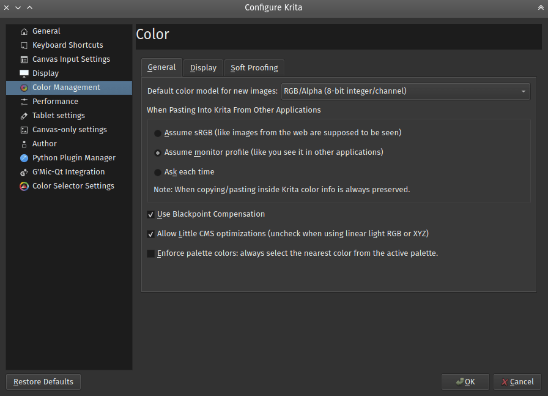

Color Management Settings¶
Krita offers extensive functionality for color management, utilising Little CMS We describe Color Management in a more overall level here: 色彩管理作業流程.
一般¶
Default Color Model For New Images¶
Choose the default model you prefer for all your images.
When Pasting Into Krita From Other Applications¶
The user can define what kind of conversion, if any, Krita will do to an image that is copied from other applications i.e. Browser, GIMP, etc.
- Assume sRGB
This option will show the pasted image in the default Krita ICC profile of sRGB.
- Assume monitor profile
This option will show the pasted image in the monitor profile selected in system preferences.
- Ask each time
Krita will ask the user each time an image is pasted, what to do with it. This is the default.
備註
When copying and pasting in Krita color information is always preserved.
Use Blackpoint Compensation¶
This option will turn on Blackpoint Compensation for the conversion. BPC is explained by the maintainer of LCMS as following:
Allow LittleCMS optimizations¶
Uncheck this option to turn off optimizations. Sometimes, in case of working with linear colorspaces, the optimizations Little CMS does will not give the best results.
5.0 版更變: Since Krita 5.0, we ship the fast-float plugin for LittleCMS. Turning this option off will also turn off the fast float plugin.
Enforce palette colors: always select the nearest color from the active palette¶
By default, palette selection widgets take the current foreground color, compare it to the swatches in its active palette and highlight the swatch that is nearest to the current foreground color.
When Enforce palette colors option is checked, it switches the internal color selector into a mode in which, instead of just highlighting the swatch, the current foreground color is replaced with the color of the nearest swatch.
Display¶
- Use System Monitor Profile
This option when selected will tell Krita to use the ICC profile selected in your system preferences.
- Screen Profiles
There are as many of these as you have screens connected. The user can select an ICC profile which Krita will use independent of the monitor profile set in system preferences. The default is sRGB built-in. On Unix systems, profile stored in $/usr/share/color/icc (system location) or $~/.local/share/color/icc (local location) will be proposed. Profile stored in Krita preference folder, $~/.local/share/krita/profiles will be visible only in Krita.
- Rendering Intent
Your choice of rendering intents is a way of telling Littlecms how you want colors mapped from one color space to another. There are four options available, all are explained on the ICC profiles manual page.
Softproofing options¶
These allow you to configure the default softproofing options. To configure the actual softproofing for the current image, go to .
For indepth details about how to use softproofing, check out the page on softproofing.